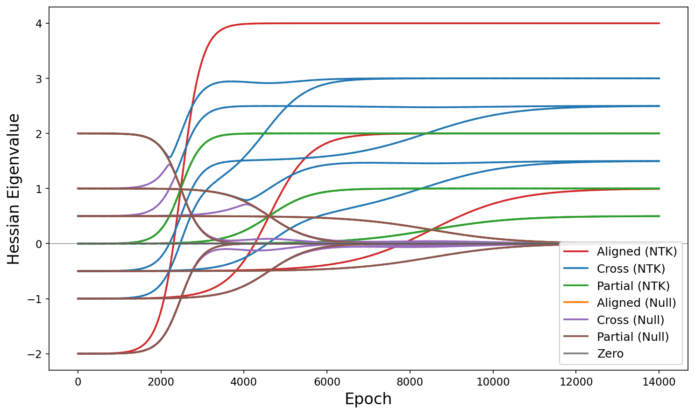
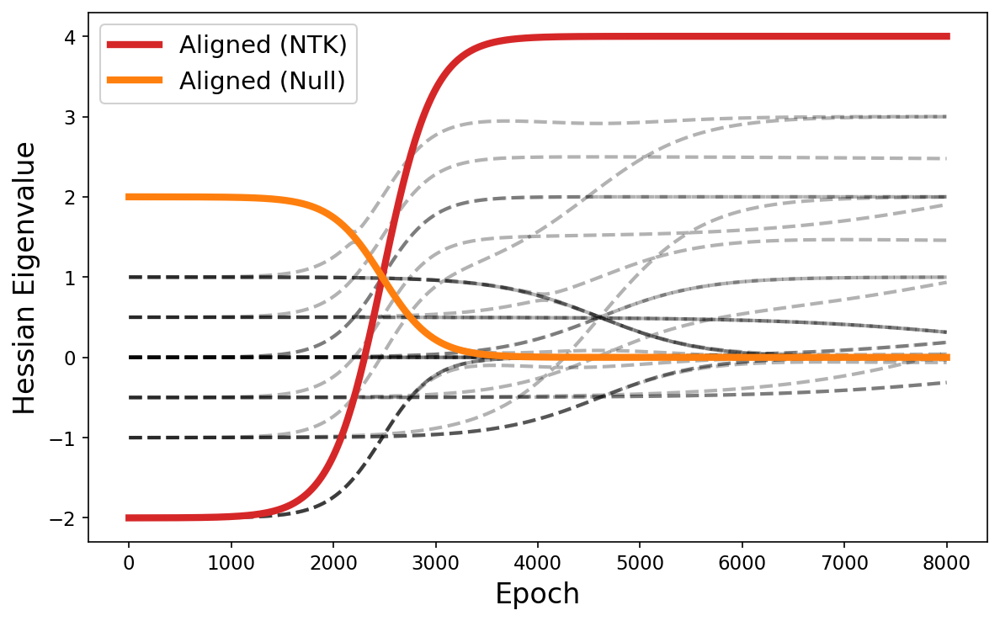
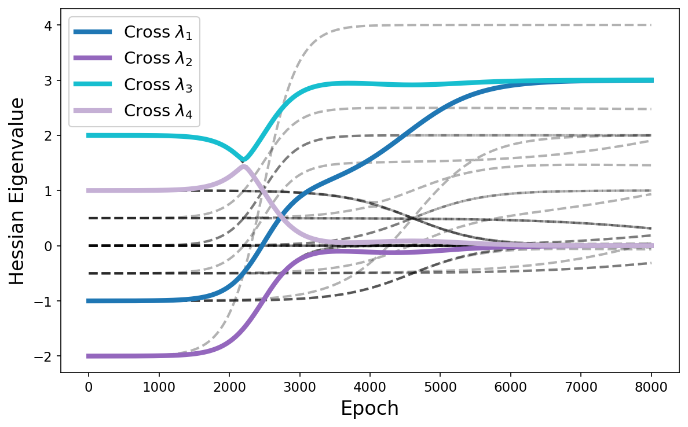
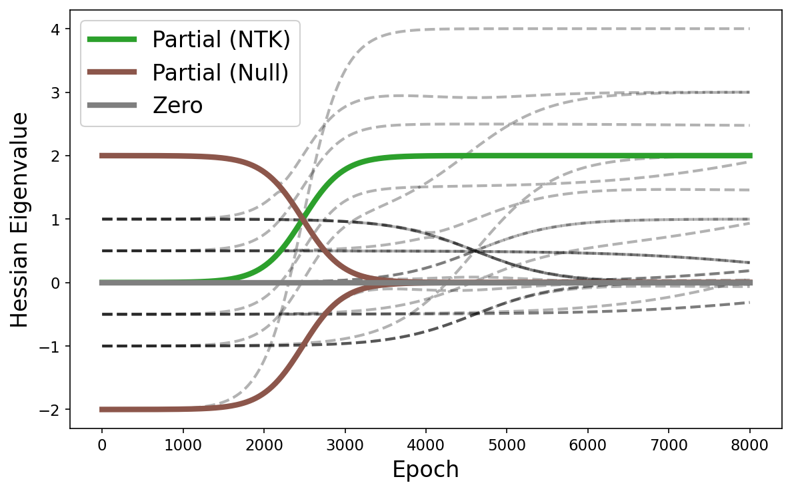

In this post, we will derive the full Hessian eigenvalues of a 2 layer linear network (with the analytic solution for small initialization). This extends from our previous work where we analyzed the Gauss-Newton (GN) Hessian eigenvalues of a deep linear network. Prior analyses have done this as well, but treat the residual term only approximately; here we diagonalize $H = H_{GN} + R$ exactly in closed form for a 2 layer network, and show several interesting effects of the residual.
The GN eigenvalues approximate the full Hessian eigenvalues, with the approximation being exact at the end of training. Last time, we saw the GN accurately predicts end-of-training Hessian eigenvalues, but showed several discrepancies before then. Specifically, experiments with a 2-layer network showed that:
After outlining our proof and explaining its results, we will show our theory accurately predicts the eigenvalues at all times.
We analyze a 2-layer linear network $f(x; \theta) = W_2 W_1 x$, where the input is $x \in \mathbb{R}^d$, the output is $f(x) \in \mathbb{R}^n$, and the hidden layer has width $m$, so that $W_1 \in \mathbb{R}^{m \times d}$ and $W_2 \in \mathbb{R}^{n \times m}$. We assume the true function $M$ has rank $r < d, m, n$ (our network is expressive enough to learn the true function).
Previously, we analyzed the NTK eigenvalues and eigenvectors of a deep linear network (in the analytic solution for small initialization). The nonzero eigenvectors were given by $\mathbf{p}_k \otimes u_i$, where $u_i$ is a left singular vector of the true function $M = U \Sigma_0 V^\top$ and $\mathbf{p}_k \in \mathbb{R}^N$ is the projection of the dataset onto right singular vector $v_k$, with entries $(\mathbf{p}_k)_a = v_k^\top x_a$.
Each eigenvector picks out a pairing between an input direction ($v_k$) and an output direction ($u_i$): the corresponding residual component measures how much error along output direction $u_i$ is excited by input variation along $v_k$.
For a depth-$L$ network, the eigenvalues take the form
$$ \Theta(t)\,(\mathbf{p}_k \otimes u_i) \;=\; \left(\sum_{\ell=1}^{L} s_k(t)^{2(\ell-1)/L}\, s_i(t)^{2(L-\ell)/L}\right) (\mathbf{p}_k \otimes u_i), $$so each NTK eigenvalue is built from a pair of singular values $s_k(t), s_i(t)$ following the staircase dynamics. There are four notable classes of NTK eigenvectors:
There are a total of $nr + dr - r^2$ NTK eigenvectors with nonzero eigenvalues. For $L = 2$, the aligned-mode eigenvalues simplify to $2 s_i(t)$, and the cross-mode eigenvalues to $s_k(t) + s_i(t)$.
For MSE loss, the full Hessian is
$$ H \;=\; \underbrace{\sum_a \frac{\partial f(x_a)}{\partial \theta}^{\!\top} \frac{\partial f(x_a)}{\partial \theta}}_{H_{\text{GN}}} \;+\; \underbrace{\sum_a r_a \cdot \frac{\partial^2 f(x_a)}{\partial \theta^2}}_{\text{residual term}}. $$The GN term of the Hessian and the NTK are related by the Jacobian, which is given by
$$ J_{(a, j),\, \alpha} \;=\; \frac{\partial f_j(x_a)}{\partial \theta_\alpha}, $$a matrix of shape $Nn \times p$, where $p$ is the number of parameters. An entry describes how an element of the output dimension $n$ changes as a parameter in $p$ is varied, for the input data point (part of $N$). The GN term and the NTK are given by
$$ H_{\text{GN}} \;=\; J^\top J, \qquad \Theta \;=\; J J^\top. $$The GN term contracts over $Nn$ to get a matrix of $p \times p$, while the NTK contracts over $p$ to get a matrix of $Nn \times Nn$. The two matrices share the same nonzero eigenvalues, with eigenvectors related by $J^\top$:
$$ H_{\text{GN}} (J^\top v) \;=\; J^\top J J^\top v \;=\; J^\top \Theta v \;=\; \lambda \, (J^\top v), $$so $J^\top v$ is an eigenvector of $H_{\text{GN}}$ with the same eigenvalue. The properly normalized eigenvector is $h \;=\; \frac{J^\top v}{\sqrt{\lambda}}$.
We provide an outline of our proof here:
Doing this yields the entire spectrum of eigenvalues and eigenvectors of the full Hessian. The calculation is long and not particularly enlightening, so we summarize the key insights from the analytical solution below, and provide the details of the proof later.
For a 2-layer deep linear network with input, output and hidden dimensions of $d, n, m$ respectively, trained on data corresponding to a matrix $M$ of rank $r \leq d, n, m$, we find the eigenvalues and eigenvectors can be broken into the following 7 classes:
| Class | Form | Count | GN $\lambda$ | Full-Hessian $\lambda$ |
|---|---|---|---|---|
| Aligned NTK | $h_{ii}$ | $r$ | $2s_i$ | $3s_i - s_{i0}$ |
| Cross NTK | $\tilde{h}_{ik}$, both $i, k\le r$ | $r^2 - r$ | $s_i + s_k$ | roots of $G^{ik}$ |
| Partial NTK | $h_{ik1}, h_{ik2}$, one of $i, k > r$ | $r(n-r) + r(d-r)$ | $s_i$ or $s_k$ | $s_i$ or $s_k$ |
| Aligned null | $g_{ii}$ | $r$ | $0$ | $s_{i0} - s_i$ |
| Cross null | $\tilde{g}_{ik}$, both $i, k\le r$ | $r^2 - r$ | $0$ | roots of $G^{ik}$ |
| Partial null | $\tilde{g}_{ki1}, \tilde{g}_{ki2}$, 1 of ($k > r$, $i > r$) | $2r(m-r)$ | $0$ | $\pm(s_i - s_{i0})$ |
| Zero null | $g_{ki1}, g_{ki2}$, $k > r$ and $i > r$ | $(m-r)(n+d-2r)$ | $0$ | $0$ |
where $s_{i0}$ refers to the target value for singular value $s_i$ and $G^{ik}$ is a matrix that relates a pair of cross-mode eigenvectors from the nonzero GN eigenvectors and from the GN null space. The roots of $G^{ik}$ are
$$ \lambda_{1,2} = \frac12 \left[ 2(s_i+s_k) - (s_{i0}+s_{k0}) \pm \sqrt{ 4 s_i s_k + (s_{i0}-s_{k0})^2 }\,\right] $$and
$$ \lambda_{3,4} = \frac12 \left[ (s_{i0}+s_{k0}) \pm \sqrt{ \bigl(2(s_i-s_k)-(s_{i0}-s_{k0})\bigr)^2 + 4 s_i s_k }\,\right]. $$We explain what this table means, focusing on the eigenvalues. NTK modes refer to eigenvectors obtained from applying the Jacobian to the NTK eigenvectors (these are the nonzero-eigenvalue eigenvectors of the GN term). Null modes refer to eigenvectors that lie in the null space of the GN term. These do not necessarily lie in the null space of the Hessian, which is the sum of the GN and residual terms:
$$ H = H_{GN} + R. $$Note that every eigenvalue is associated with a pair of singular values $s_i, s_k$ that are learned during training. Throughout this analysis, we will assume that $s_{i0} > s_{k0}$.

Aligned eigenvectors have $s_i = s_k$. One of these eigenvalues dominate the sharpness at almost all times except a brief period when the largest eigenvalue is being learned. They contribute two types of eigenvalues:
The residual thus causes eigenvectors with 0 GN eigenvalue to have large initial positive values, and causes eigenvectors that would normally dominate sharpness to have negative eigenvalues.

Cross eigenvectors have $i \neq k$, but also $s_{k0}, s_{i0} \neq 0$. These are not generally eigenvectors of the GN term or the residual, but only eigenvectors of the full Hessian. We analyze their behaviour assuming $s_i$ is learned before $s_k$, which occurs if $s_{i0} > s_{k0}$ and the model starts out with similar singular values in both matrices.
Initially, cross eigenvectors take on the following eigenvalues:
$$ \lambda_{1, 2, 3, 4} = -s_{k0},\; -s_{i0},\; s_{i0},\; s_{k0}, $$which are fairly large. We find that $\lambda_1, \lambda_2$ monotonically increase to
$$ \lambda_{1, 2} = s_{i0} - s_{k0},\; 0, $$while $\lambda_3, \lambda_4$ temporarily decrease and increase respectively, reaching
$$ \lambda_3 = \tfrac12 \left[ s_{i0}+s_{k0} + \sqrt{4s_i s_k} \right], \qquad \lambda_4 = \tfrac12 \left[ s_{i0}+s_{k0} - \sqrt{4s_i s_k} \right] $$before proceeding to monotonically increase/decrease to their final values
$$ \lambda_3 = s_{i0} + s_{k0}, \qquad \lambda_4 = 0. $$Interestingly, even though $s_k$ has not been learned, $\lambda_3$ directly assumes the value it would have at the end of training, $s_{i0} + s_{k0}$. This is a notable effect from our residual. Meanwhile the $\lambda_1$ assumes a value smaller than that predicted by the GN.
Then, as $s_k$ is learned, we find that $\lambda_1 = s_{i0} - s_{k0}$ monotonically increases to its final value of $s_{i0} + s_{k0}$. On the other hand, $\lambda_2, \lambda_3$ decrease briefly before increasing, while $\lambda_4$ briefly increases before decreasing. Note that $\lambda_2, \lambda_3, \lambda_4$ already reached their final values as predicted by the GN even without learning $s_k$.
Note that of the two initially negative eigenvalues, the larger one becomes positive ($\lambda_1$) and the smaller one vanishes ($\lambda_2$); of the two initially positive eigenvalues, the larger one grows further ($\lambda_3$) and the smaller one vanishes ($\lambda_4$).

The partial eigenvectors are modes where $i \neq k$ and $s_i$ or $s_k = 0$. There are three eigenvalues here: $s_i$ from our NTK, which grows monotonically over time (but does not match the aligned modes, with eigenvalue $2s_i$), and $\pm (s_i - s_{i0})$ from the null space, which can dominate the initial sharpness but decays to 0.
The partial null modes correspond to cases where the hidden dimension is larger than the true rank of our function.
The zero eigenvectors are modes that come from a large hidden dimension and a larger-than-necessary output or input dimension. These always have 0 eigenvalue.

Hessian eigenvectors exist in parameter space, which means that any eigenvector $v$ can be expressed as
$$ v = \begin{pmatrix} dW_1 \\ dW_2 \end{pmatrix}. $$It turns out many eigenvectors can be expressed as
$$ v = \begin{pmatrix} c_1 o_i \,v_k^\top \\ c_2 u_i \,o_k^\top \end{pmatrix} $$for some (possibly zero) coefficients $c_1, c_2$. Specifically, $u_i, o_k, v_j$ are columns from the matrices of the SVD decomposition of the weights $W_1 = U \Sigma O^\top, W_2 = O \Sigma V^\top$. Our cross and partial eigenvectors do not follow this trend, but instead of being single outer products of pairs of vectors, they are represented by a small combination of such pairs.
Another way to understand eigenvectors is that each eigenvector is related to one or two singular values $s_i, s_k$. Aligned eigenvectors (with $s_k = s_i$) relate pairs of vectors that correspond to one singular value, e.g. $v_1$ maps to $\sqrt{\sigma_1}$ from $\Sigma$, which maps to $o_1^\top$ and then $o_1$, and finally $u_1$ from $U$. Cross-mode eigenvectors involve pairs of vectors that correspond to different singular values, with partial modes being a special case where one singular value doesn't exist.
The table can be difficult to interpret. To give intuition about how the counts of eigenvectors behave, we go through a small finite case in detail.
Consider $y = Mx$ where $M$ is a $2\times2$ matrix with full rank, and our network is $f = W_2 W_1 x$ where $W_2, W_1$ are $2\times2$ weight matrices. Our model has 8 parameters and thus 8 eigenvectors. There are two nonzero singular values, and 2 left and right singular vectors $u_i, v_i$. This results in the following eigenvectors:
The aligned eigenvectors are
$$ h_{11} = \frac{1}{\sqrt{2}} \begin{pmatrix} o_1 v_1^\top \\ u_1 o_1^\top \end{pmatrix}, \quad h_{22} = \frac{1}{\sqrt{2}} \begin{pmatrix} o_2 v_2^\top \\ u_2 o_2^\top \end{pmatrix}, \quad g_{11} = \frac{1}{\sqrt{2}} \begin{pmatrix} o_1 v_1^\top \\ -u_1 o_1^\top \end{pmatrix}, \quad g_{22} = \frac{1}{\sqrt{2}} \begin{pmatrix} o_2 v_2^\top \\ -u_2 o_2^\top \end{pmatrix}. $$The cross-mode GN eigenvectors (from which we generate the full Hessian eigenvectors) are
$$ h_{12} = \frac{1}{\sqrt{s_1 + s_2}} \begin{pmatrix} \sqrt{s_1} \, o_1 v_2^\top \\ \sqrt{s_2} \, u_1 o_2^\top \end{pmatrix}, \qquad h_{21} = \frac{1}{\sqrt{s_1 + s_2}} \begin{pmatrix} \sqrt{s_2} \, o_2 v_1^\top \\ \sqrt{s_1} \, u_2 o_1^\top \end{pmatrix}, $$and the cross-mode null vectors
$$ g_{12} = \frac{1}{\sqrt{s_1 + s_2}} \begin{pmatrix} \sqrt{s_2} \, o_1 v_2^\top \\ -\sqrt{s_1} \, u_1 o_2^\top \end{pmatrix}, \qquad g_{21} = \frac{1}{\sqrt{s_1 + s_2}} \begin{pmatrix} \sqrt{s_1} \, o_2 v_1^\top \\ -\sqrt{s_2} \, u_2 o_1^\top \end{pmatrix}. $$The cross-mode full Hessian eigenvectors $\tilde{h}_{ik}, \tilde{g}_{ik}$ are more complicated, since they change as singular values are learned. At initialization where $s_i \approx s_k \approx 0$, we have
$$ \tilde{h}_{12} = \frac{1}{\sqrt{2}} \begin{pmatrix} o_2 v_1^\top \\ u_1 o_2^\top \end{pmatrix}, \qquad \tilde{h}_{21} = \frac{1}{\sqrt{2}} \begin{pmatrix} o_1 v_2^\top \\ u_2 o_1^\top \end{pmatrix}, $$ $$ \tilde{g}_{12} = \frac{1}{\sqrt{2}} \begin{pmatrix} -o_2 v_1^\top \\ u_1 o_2^\top \end{pmatrix}, \qquad \tilde{g}_{21} = \frac{1}{\sqrt{2}} \begin{pmatrix} o_1 v_2^\top \\ -u_2 o_1^\top \end{pmatrix}. $$Note that these differ from our GN eigenvectors, e.g. $\tilde{h}_{12}$ has a different pairing for its $W_1, W_2$ layers. When $s_i \approx s_{i0}, s_k \approx 0$ we have
$$ \tilde{h}_{12} = \frac{1}{\sqrt{2}} \begin{pmatrix} o_1 v_2^\top \\ -u_2 o_1^\top \end{pmatrix}, \qquad \tilde{h}_{21} = \frac{1}{\sqrt{2}} \begin{pmatrix} o_1 v_2^\top \\ u_2 o_1^\top \end{pmatrix}, $$ $$ \tilde{g}_{12} = \begin{pmatrix} 0 \\ -u_1 o_2^\top \end{pmatrix}, \qquad \tilde{g}_{21} = \begin{pmatrix} o_2 v_1^\top \\ 0 \end{pmatrix}. $$Finally, when $s_i \approx s_{i0}, s_k \approx s_{k0}$, the GN eigenvectors are also the full Hessian eigenvectors. Note that this implies the $W_2$ block of $\tilde{h}_{12}$, $-u_2 o_1^\top$, rotates as it learns the last singular value into $u_1 o_2^\top$. This yields 8 total eigenvectors, as required.
Suppose we increase the hidden dimension of our model to 3. In that case, we have 12 parameters and expect 4 additional eigenvectors. Increasing the number of hidden dimensions does not increase the singular directions (still $r = 2$), and it does not add new left and right singular vectors $u_i, v_i$. The only thing it adds is additional hidden directions $o_i$.
This results in more partial null modes (cross modes require the dimension of the matrix to increase, while partial NTK or zero null modes require new left or right singular vectors). The new GN eigenvectors are
$$ g_{131} = \begin{pmatrix} 0\\ u_1 o_3^\top\end{pmatrix}, \quad g_{231} = \begin{pmatrix} 0\\ u_2 o_3^\top\end{pmatrix}, $$where the end index $1$ denotes that the $dW_1$ block is 0, and
$$ g_{312} = \begin{pmatrix} o_3\, v_1^\top\\ 0\end{pmatrix}, \quad g_{322} = \begin{pmatrix} o_3\, v_2^\top\\ 0\end{pmatrix}, $$where the end index $2$ denotes that the $dW_2$ block is 0. The actual eigenvectors are formed from combinations of these vectors (similar to the cross modes, formed by a combination of 4 vectors).
Suppose we increase the output dimension of our model to 3. Now we have 15 parameters, with a new left singular vector $u_3$ that is associated with a singular value of 0. Our new eigenvectors are the two partial NTK vectors
$$ h_{311} = \begin{pmatrix} 0\\ u_3 o_1^\top\end{pmatrix}, \quad h_{321} = \begin{pmatrix} 0\\ u_3 o_2^\top\end{pmatrix}, $$and a new zero null mode
$$ g_{331} = \begin{pmatrix} 0\\ u_3 o_3^\top\end{pmatrix}. $$Increasing the input dimension next results in two new partial NTK vectors and another new zero null mode. From this, we see that widening the output dimension results in more eigenvectors of the form $(0, u_i o_k^\top), (o_k v_i^\top, 0)$ where the new orthogonal vectors $o_k$ are used. The other eigenvector types require pairs with input or output dimension vectors $u_i, v_i$. Widening the input or output dimension generates more of those vectors, which results in more eigenvectors with the new couplings.
Finally, for the nice square case where $r = d = m = n$, we present the simplified table of eigenvectors:
| Class | Form | Count | GN $\lambda$ | Full-Hessian $\lambda$ |
|---|---|---|---|---|
| Aligned NTK | $h_{ii}$ | $r$ | $2s_i$ | $3s_i - s_{i0}$ |
| Cross NTK | $\tilde{h}_{ik}$, both $i, k \le r$ | $r^2 - r$ | $s_i + s_k$ | roots of $G^{ik}$ |
| Aligned null | $g_{ii}$ | $r$ | $0$ | $s_{i0} - s_i$ |
| Cross null | $\tilde{g}_{ik}$, both $i, k \le r$ | $r^2 - r$ | $0$ | roots of $G^{ik}$ |
Here we provide the details of our proof. To make the algebraic manipulations more concrete, we also provide $2\times2$ explicit calculations: these can be skipped but are useful to understand the manipulations.
Before deriving the residual in full generality, we work through a small nontrivial case explicitly. This will help make concrete some of the objects we discuss in the general case. Take $d = n = m = 2$, so that
$$ W_1 = \begin{pmatrix} a_{11} & a_{12} \\ a_{21} & a_{22} \end{pmatrix}, \qquad W_2 = \begin{pmatrix} b_{11} & b_{12} \\ b_{21} & b_{22} \end{pmatrix}, $$where we write $a_{k\ell} = (W_1)_{k\ell}$ and $b_{jk} = (W_2)_{jk}$ for brevity. There are 8 parameters, ordered as $(a_{11}, a_{12}, a_{21}, a_{22}, b_{11}, b_{21}, b_{12}, b_{22})$ ($W_1$ first, then $W_2$, organized so the first two $W_1$ parameters link to the first two $W_2$ parameters via their hidden unit contributions).
The network output is $f(x) = W_2 W_1 x$. Writing it out component by component, the hidden activations are $(W_1 x)_k = \sum_\ell a_{k\ell} x_\ell$, and so
$$ f_j(x) = \sum_k b_{jk} (W_1 x)_k = \sum_{k, \ell} b_{jk}\, a_{k\ell}\, x_\ell. $$For the first output, this is a sum of four terms:
$$ f_1(x) = b_{11} a_{11} x_1 + b_{11} a_{12} x_2 + b_{12} a_{21} x_1 + b_{12} a_{22} x_2, $$and similarly for $f_2$ with $b_{11}, b_{12}$ replaced by $b_{21}, b_{22}$. Every term is a product of one $W_2$ parameter, one $W_1$ parameter, and one input coordinate.
The residual term of the Hessian is
$$ R = \sum_a r_a \cdot \partial^2 f(x_a)/\partial \theta^2 $$so we need the second derivatives of each $f_j$ with respect to pairs of parameters. We note two facts about second derivatives:
Concretely, differentiating $f_1 = b_{11} a_{11} x_1 + b_{11} a_{12} x_2 + b_{12} a_{21} x_1 + b_{12} a_{22} x_2$:
$$ \frac{\partial^2 f_1}{\partial b_{11} \, \partial a_{11}} = x_1, \quad \frac{\partial^2 f_1}{\partial b_{11} \, \partial a_{12}} = x_2, \quad \frac{\partial^2 f_1}{\partial b_{12} \, \partial a_{21}} = x_1, \quad \frac{\partial^2 f_1}{\partial b_{12} \, \partial a_{22}} = x_2, $$with every other second derivative of $f_1$ equal to zero. $f_1$ does not depend on $b_{21}, b_{22}$ at all, so any derivative involving those vanishes — this is the $\delta_{jj'}$ at work. This generalizes to
$$ \frac{\partial^2 f_j}{\partial (W_2)_{j'k'} \, \partial (W_1)_{k\ell}} = \delta_{jj'}\, \delta_{kk'}\, x_\ell, $$with $\delta_{jj'}$ enforcing “feeds the right output” and $\delta_{kk'}$ enforcing “shares the hidden unit.”
Contracting with the residual. The residual term weighs each output's parameter-Hessian by a residual error component and sums over data points. Denote the residual on datapoint $a$ as $r_a = (r_a^{(1)}, r_a^{(2)})^\top$ (with two dimensions, one for each output dimension). The residual Hessian entry for parameters $b_{j'k'}$ and $a_{k\ell}$ involves summing over the two output dimensions:
$$ \begin{aligned} R_{b_{j'k'},\, a_{k\ell}} &= \sum_a \sum_j (r_a)_j \, \frac{\partial^2 f_j}{\partial b_{j'k'} \partial a_{k\ell}} \\[4pt] &= \sum_a \left[ (r_a)_1 \frac{\partial^2 f_1}{\partial b_{j'k'} \partial a_{k\ell}} + (r_a)_2 \frac{\partial^2 f_2}{\partial b_{j'k'} \partial a_{k\ell}} \right] \\[4pt] &= \sum_a \left[ (r_a)_1 \, \delta_{1 j'} \, \delta_{kk'} (x_a)_\ell + (r_a)_2 \, \delta_{2 j'} \, \delta_{kk'} (x_a)_\ell \right] \\[4pt] &= \sum_a (r_a)_{j'} \, \delta_{kk'} \, (x_a)_\ell \\[4pt] &= \delta_{kk'} \underbrace{\sum_a (r_a)_{j'} (x_a)_\ell}_{C_{j'\ell}}. \end{aligned} $$where the sum over output index $j$ collapsed to $j = j'$. A Kronecker delta $\delta_{kk'}$ remains, which denotes how the $W_1, W_2$ parameters we take the derivatives with respect to must actually be connected. We are left with a summation over data points matching residual components with input components. We can arrange these summations into a matrix.
$$ C = \sum_a r_a x_a^\top, \qquad C = \begin{pmatrix} \sum_a r_a^{(1)} (x_a)_1 & \sum_a r_a^{(1)} (x_a)_2 \\ \sum_a r_a^{(2)} (x_a)_1 & \sum_a r_a^{(2)} (x_a)_2 \end{pmatrix}. $$Each entry $C_{j\ell}$ measures how strongly input feature $\ell$ correlates with the error in output $j$ across the dataset.
Assembling the full residual. Because two derivatives with respect to the same layer vanish, the full $8 \times 8$ residual in our parameter ordering must have the block structure
$$ R = \begin{pmatrix} 0 & B^\top \\ B & 0 \end{pmatrix}, $$where the diagonal blocks are zero (same-layer derivatives) and the off-diagonal block $B$ collects the mixed $W_2$–$W_1$ derivatives we just computed.
The entries of $B$ are given by our formula $R_{b_{j'k'},\, a_{k\ell}} = \delta_{kk'}\, C_{j'\ell}$. The factor $\delta_{kk'}$ says an entry is nonzero only when the $W_2$ parameter and the $W_1$ parameter share a hidden unit ($k = k'$); when they do, the value is just $C_{j'\ell}$. For our ordering, we have the rows of $B$ given by $W_1$ parameters $(a_{11}, a_{12}, a_{21}, a_{22})$ with columns from $W_2$ in the order $(b_{11}, b_{21}, b_{12}, b_{22})$. This gives
$$ B = \begin{pmatrix} C_{11} & C_{21} & 0 & 0 \\ C_{12} & C_{22} & 0 & 0 \\ 0 & 0 & C_{11} & C_{21} \\ 0 & 0 & C_{12} & C_{22} \end{pmatrix} = I_2 \otimes C^\top. $$The two diagonal blocks are both copies of $C^\top$: the top-left block couples the parameters of hidden unit $1$ ($a_{11}, a_{12}$ with $b_{11}, b_{21}$), the bottom-right block couples those of hidden unit $2$. The off diagonal zeros correspond to derivatives which are zero, because the parameters are not connected (a weight that takes output of hidden unit $2$ doesn't connect to a weight that feeds hidden unit $1$).
The two blocks are identical because the two hidden units have identical roles. The full residual can then be written in a Kronecker form:
$$ R = \begin{pmatrix} 0 & I_2 \otimes C \\ I_2 \otimes C^\top & 0 \end{pmatrix}. $$$C$ can be simplified with the whitening assumption.
Having seen the basic idea with a concrete example, we move to deriving the general residual for a 2 layer network of arbitrary dimensions.
The general residual term is
$$R = \sum_a r_a \cdot \frac{\partial^2 f(x_a)}{\partial \theta^2} = \sum_{a, j} (r_a)_j \, \frac{\partial^2 f_j(x_a)}{\partial \theta^2},$$where the dot denotes contraction over the output dimension. Each output component $f_j$ contributes its own parameter-Hessian, weighted by the corresponding residual component $(r_a)_j$, and we sum over both data points $a$ and output dimensions $j$.
For any deep linear network, two derivatives with respect to parameters in the same layer always vanish. The residual must therefore admit a block form where blocks pair parameters from different layers. For 2-layers we have
$$R = \begin{pmatrix} 0 & B^\top \\ B & 0 \end{pmatrix}.$$The block structure is symmetric because the order of partial derivatives does not matter, i.e. $\frac{\partial^2 f}{\partial \theta_\alpha \partial \theta_\beta} = \frac{\partial^2 f}{\partial \theta_\beta \partial \theta_\alpha}$. The individual blocks however are not symmetric (for example, if $W_1$ has many more parameters than $W_2$).
Note the only nonzero second derivatives are
$$\frac{\partial^2 f_j}{\partial (W_2)_{j'k'} \, \partial (W_1)_{k\ell}} = \delta_{jj'} \, \delta_{kk'} \, x_\ell.$$So only if the $W_1, W_2$ parameter derivatives are connected (via $\delta_{kk'}$) then the contribution is nonzero. The contribution from the $j$th output dimension is also only nonzero if the $W_2$ parameter contributes to this output (via $\delta_{jj'}$).
Consider a specific $(W_1)_{k\ell}$ and a specific $(W_2)_{j'k'}$. The corresponding entry of $B$ is obtained by summing over the second derivative with the residuals:
$$B_{(W_2)_{j'k'},\, (W_1)_{k\ell}} \;=\; \sum_{a, j} (r_a)_j \, \delta_{jj'} \, \delta_{kk'} \, (x_a)_\ell \;=\; \delta_{kk'} \sum_a (r_a)_{j'} (x_a)_\ell.$$It makes sense to represent the two free indices $j'$ and $\ell$ as a matrix:
$$C_{j'\ell} = \sum_a (r_a)_{j'} (x_a)_\ell = \sum_a (r_a x_a^\top)_{j' \ell}, \qquad \implies \quad C = \sum_a r_a x_a^\top.$$This is a sum over the dataset, where for each data point $a$ we form the outer product of the residual $r_a$ with the input $x_a$. If $(r_a)_j$ and $(x_a)_\ell$ tend to have the same sign across the dataset, $c_{j\ell}$ is large and positive — the $\ell$-th input feature correlates with errors in output $j$. If they tend to have opposite signs, $c_{j\ell}$ is large and negative. If they are uncorrelated across the dataset, $c_{j\ell} \approx 0$. So $c_{j\ell}$ measures how systematically input feature $\ell$ predicts error in output $j$ across the dataset.
Ordering parameters by their hidden index (first $W_1$ parameters grouped by hidden unit $k$, then $W_2$ parameters grouped by hidden unit $k'$), $\delta_{kk'}$ makes $B$ block-diagonal in the hidden index, with $m$ identical $n \times d$ blocks each equal to $C^\top$:
$$B = I_m \otimes C^\top, \qquad R = \begin{pmatrix} 0 & I_m \otimes C \\ I_m \otimes C^\top & 0 \end{pmatrix}.$$The Kronecker structure expresses the fact that $R$ acts independently on each hidden unit's slice of parameter space.
Under the analytic solution and whitening $\sum_a x_a x_a^\top = I$, the residual is
$$r_a = f(x_a) - y_a = U(\Sigma(t) - \Sigma_0) V^\top x_a,$$so
$$C = U (\Sigma(t) - \Sigma_0) V^\top \sum_a x_a x_a^\top = U (\Sigma(t) - \Sigma_0) V^\top.$$$C$ is already in SVD form, with singular vectors inherited from the target matrix and singular values $|s_i(t) - s_{i0}|$.
We explicitly derive the GN eigenvectors. The general case involves several algebraic manipulations, which we make concrete by first going through a small example in detail.
Take $d = n = m = 2$, so that $W_1$ and $W_2$ are $2 \times 2$ matrices with entries $a_{k\ell} = (W_1)_{k\ell}$ and $b_{jk} = (W_2)_{jk}$. There are 8 parameters, and we use two whitened data points $x_1, x_2$ (where $\sum_a x_a x_a^\top = I$). The network is $f(x) = W_2 W_1 x$. The output dimension $j$ for input $x_a$ is $f_j(x_a) = \sum_{k\ell} b_{jk} a_{k\ell} (x_a)_\ell$.
We choose to order our Jacobian as follows: Each column represents a parameter, which we take the derivative with respect to. We choose to order them from left to right as $(a_{11}, a_{12}, a_{21}, a_{22}, b_{11}, b_{21}, b_{12}, b_{22})$, with $W_1$ parameters first, then $W_2$ parameters. The rows describe the datapoint and the output dimension: we choose to first go through all the output dimensions of a given data point, before doing the next datapoint. Specifically this order from top to bottom is $(f_1 (x_1), f_2 (x_1), f_1 (x_2), f_2 (x_2))$.
The Jacobian is
$$ J = \begin{pmatrix} \dfrac{\partial f_1(x_1)}{\partial a_{11}} & \dfrac{\partial f_1(x_1)}{\partial a_{12}} & \dfrac{\partial f_1(x_1)}{\partial a_{21}} & \dfrac{\partial f_1(x_1)}{\partial a_{22}} & \dfrac{\partial f_1(x_1)}{\partial b_{11}} & \dfrac{\partial f_1(x_1)}{\partial b_{21}} & \dfrac{\partial f_1(x_1)}{\partial b_{12}} & \dfrac{\partial f_1(x_1)}{\partial b_{22}} \\[10pt] \dfrac{\partial f_2(x_1)}{\partial a_{11}} & \dfrac{\partial f_2(x_1)}{\partial a_{12}} & \dfrac{\partial f_2(x_1)}{\partial a_{21}} & \dfrac{\partial f_2(x_1)}{\partial a_{22}} & \dfrac{\partial f_2(x_1)}{\partial b_{11}} & \dfrac{\partial f_2(x_1)}{\partial b_{21}} & \dfrac{\partial f_2(x_1)}{\partial b_{12}} & \dfrac{\partial f_2(x_1)}{\partial b_{22}} \\[10pt] \dfrac{\partial f_1(x_2)}{\partial a_{11}} & \dfrac{\partial f_1(x_2)}{\partial a_{12}} & \dfrac{\partial f_1(x_2)}{\partial a_{21}} & \dfrac{\partial f_1(x_2)}{\partial a_{22}} & \dfrac{\partial f_1(x_2)}{\partial b_{11}} & \dfrac{\partial f_1(x_2)}{\partial b_{21}} & \dfrac{\partial f_1(x_2)}{\partial b_{12}} & \dfrac{\partial f_1(x_2)}{\partial b_{22}} \\[10pt] \dfrac{\partial f_2(x_2)}{\partial a_{11}} & \dfrac{\partial f_2(x_2)}{\partial a_{12}} & \dfrac{\partial f_2(x_2)}{\partial a_{21}} & \dfrac{\partial f_2(x_2)}{\partial a_{22}} & \dfrac{\partial f_2(x_2)}{\partial b_{11}} & \dfrac{\partial f_2(x_2)}{\partial b_{21}} & \dfrac{\partial f_2(x_2)}{\partial b_{12}} & \dfrac{\partial f_2(x_2)}{\partial b_{22}} \end{pmatrix}. $$The NTK eigenvectors are $\mathbf{p}_k \otimes u_i$, which we flatten into 4-vectors that match the row ordering of $J$:
$$ \mathbf{p}_k \otimes u_i = \begin{pmatrix} (v_k^\top x_1)(u_i)_1 \\ (v_k^\top x_1)(u_i)_2 \\ (v_k^\top x_2)(u_i)_1 \\ (v_k^\top x_2)(u_i)_2 \end{pmatrix}. $$This represents the different output dimensions on the different input data points. The GN eigenvectors are $J^\top v$, which maps these 4-vectors into 8-vectors in parameter space.
Consider the output vector consisting of $W_1$ parameters. This is given by
$$ \begin{pmatrix} (dW_1)_{11} \\ (dW_1)_{12} \\ (dW_1)_{21} \\ (dW_1)_{22} \end{pmatrix} = \begin{pmatrix} \dfrac{\partial f_1(x_1)}{\partial a_{11}} & \dfrac{\partial f_2(x_1)}{\partial a_{11}} & \dfrac{\partial f_1(x_2)}{\partial a_{11}} & \dfrac{\partial f_2(x_2)}{\partial a_{11}} \\[8pt] \dfrac{\partial f_1(x_1)}{\partial a_{12}} & \dfrac{\partial f_2(x_1)}{\partial a_{12}} & \dfrac{\partial f_1(x_2)}{\partial a_{12}} & \dfrac{\partial f_2(x_2)}{\partial a_{12}} \\[8pt] \dfrac{\partial f_1(x_1)}{\partial a_{21}} & \dfrac{\partial f_2(x_1)}{\partial a_{21}} & \dfrac{\partial f_1(x_2)}{\partial a_{21}} & \dfrac{\partial f_2(x_2)}{\partial a_{21}} \\[8pt] \dfrac{\partial f_1(x_1)}{\partial a_{22}} & \dfrac{\partial f_2(x_1)}{\partial a_{22}} & \dfrac{\partial f_1(x_2)}{\partial a_{22}} & \dfrac{\partial f_2(x_2)}{\partial a_{22}} \end{pmatrix} \begin{pmatrix} (v_k^\top x_1)(u_i)_1 \\ (v_k^\top x_1)(u_i)_2 \\ (v_k^\top x_2)(u_i)_1 \\ (v_k^\top x_2)(u_i)_2 \end{pmatrix}. $$We carry out the matrix-vector product, using the fact that a general Jacobian element is $\dfrac{\partial f_j(x_a)}{\partial (W_1)_{k\ell}} = (W_2)_{jk}\,(x_a)_\ell$. This yields
$$ \begin{aligned} (dW_1)_{11} &= (W_2)_{11}(x_1)_1(v_k^\top x_1)(u_i)_1 + (W_2)_{21}(x_1)_1(v_k^\top x_1)(u_i)_2 + (W_2)_{11}(x_2)_1(v_k^\top x_2)(u_i)_1 + (W_2)_{21}(x_2)_1(v_k^\top x_2)(u_i)_2 \\[4pt] (dW_1)_{12} &= (W_2)_{11}(x_1)_2(v_k^\top x_1)(u_i)_1 + (W_2)_{21}(x_1)_2(v_k^\top x_1)(u_i)_2 + (W_2)_{11}(x_2)_2(v_k^\top x_2)(u_i)_1 + (W_2)_{21}(x_2)_2(v_k^\top x_2)(u_i)_2 \\[4pt] (dW_1)_{21} &= (W_2)_{12}(x_1)_1(v_k^\top x_1)(u_i)_1 + (W_2)_{22}(x_1)_1(v_k^\top x_1)(u_i)_2 + (W_2)_{12}(x_2)_1(v_k^\top x_2)(u_i)_1 + (W_2)_{22}(x_2)_1(v_k^\top x_2)(u_i)_2 \\[4pt] (dW_1)_{22} &= (W_2)_{12}(x_1)_2(v_k^\top x_1)(u_i)_1 + (W_2)_{22}(x_1)_2(v_k^\top x_1)(u_i)_2 + (W_2)_{12}(x_2)_2(v_k^\top x_2)(u_i)_1 + (W_2)_{22}(x_2)_2(v_k^\top x_2)(u_i)_2 \end{aligned} $$These summations simplify. For $(dW_1)_{11}$, note that we can factor into a data dependent sum and an output dependent sum:
$$ (dW_1)_{11} = \sum_a (v_k^\top x_a)(x_a)_1 \underbrace{\Big[(u_i)_1 (W_2)_{11} + (u_i)_2 (W_2)_{21}\Big]}_{j\text{-sum}}. $$For the $j$ sum, note
$$(u_i)_1(W_2)_{11} + (u_i)_2(W_2)_{21} = (W_2^\top u_i)_1 = \sqrt{s_i}\,(o_i)_1$$where we use $W_2^\top u_i = O\Sigma^{1/2}U^\top u_i = \sqrt{s_i}\,o_i$. Note $U^\top u_i$ extracts a specific diagonal element of $\Sigma^{1/2}$ and an eigenvector $o_i$.
For the $a$ sum, we have
$$\sum_a (v_k^\top x_a)(x_a)_1 = (v_k)_1$$because our inputs are whitened. Thus we have
$$(dW_1)_{11} = \sqrt{s_i}\,(o_i)_1 (v_k)_1$$which is the $(1,1)$ entry of $\sqrt{s_i}\,o_i v_k^\top$. The other three entries factor identically, with the $j$-sum producing $(o_i)_{k'}$ and the $a$-sum producing $(v_k)_\ell$. The whole block is therefore the outer product
$$ dW_1 = \sqrt{s_i}\, o_i v_k^\top. $$The same calculation for the $W_2$ parameters yields
$$ dW_2 = \sqrt{s_k}\, u_i o_k^\top. $$Stacking the two blocks gives the eigenvector as
$$ h_{ik} = \begin{pmatrix} \sqrt{s_i}\, o_i v_k^\top \\ \sqrt{s_k}\, u_i o_k^\top \end{pmatrix}. $$Having gone through the explicit calculation for a 2x2 case, we now consider the general case below.
We have $nr + dr - r^2$ NTK eigenvectors in $Nn$ space with nonzero eigenvalues, which we transform into eigenvectors in $p$ space by multiplying by $J^\top$. Although there are more than $nr + dr - r^2$ eigenvectors in $Nn$ space, they have $0$ eigenvalues and get mapped to a $0$ vector.
Specifically, $J^\top v$ takes a row of $J$, scales by the matching entry of $v$, and sums. In our case our vector $v$ is denoted by two indices, and thus
$$(J^\top v)_\beta = \sum_{a, j} J_{(a,j),\, \beta}\, v_{a, j} = \sum_{a, j} \frac{\partial f_j(x_a)}{\partial \theta_\beta}\, v_{a, j},$$which tells us how much the function changes (over all data and output combinations) as parameter $\beta$ is varied. Normally this would be a single summation, but because we've stacked data ($a$) and outputs ($j$) together into the vector, we sum over them independently.
Our GN Hessian eigenvectors live in parameter space. As a convention, we'll break this into $W_1$ parameters and $W_2$ parameters:
$$h = \begin{pmatrix} dW_1 \\ dW_2 \end{pmatrix} = \begin{pmatrix} h^{(1)} \\ h^{(2)} \end{pmatrix},$$where $h^{(1)}$ has shape $m \times d$ (matching $W_1$) and $h^{(2)}$ has shape $n \times m$ (matching $W_2$). This split aligns the parameter-space representation with the block structure of $R$.
We're interested in the exact form of the Hessian eigenvectors. Denote $h_{ik} = J^\top(\mathbf{p}_k \otimes u_i)/\sqrt{\lambda}$ as the Gauss-Newton eigenvector ($ik$ are not indices of a matrix, but instead denote our eigenvectors), with $\lambda = s_k(t) + s_i(t)$. We choose $h_{ik}$ and not $h_{ki}$ for a more convenient ordering later.
Our weights are given by $W_1 = O\Sigma^{1/2} V^\top$ and $W_2 = U\Sigma^{1/2} O^\top$, where $O$ is an orthogonal matrix that represents a degree of freedom between our two layers. Unlike with the NTK, $O$ appears in the Hessian eigenvectors because they live in parameter space where the individual weights matter. Denote $o_i$ as the hidden-space direction corresponding to the $i$-th SVD mode, an equivalent to $u_i, v_i$.
We first consider eigenvectors $\mathbf{p}_k \otimes u_i$ where $k, i \leq r$ and both singular values are nonzero.
Layer 1. The layer-1 Jacobian entry for datapoint $a$ on output index $j$ and parameter $(W_1)_{k' l}$ is
$$J^{(1)}_{(a,j),\,(k',\ell)} = \frac{\partial f_j(x_a)}{\partial (W_1)_{k'\ell}} = (W_2)_{jk'}(x_a)_\ell$$This comes directly from $f = W_2 W_1 x$, noting that a specific $W_1$ weight and output dimension connect with exactly one $W_2$ weight. Contracting with $\mathbf{p}_k \otimes u_i$:
$$(h_{ik}^{(1)})_{k'\ell} = \frac{1}{\sqrt{\lambda}} \sum_{a, j}(\mathbf{p}_k)_a (u_i)_j (W_2)_{jk'} (x_a)_\ell.$$The $j$-sum gives
$$\sum_j (u_i)_j (W_2)_{jk'} = (W_2^\top u_i)_{k'} = (O\Sigma^{1/2} U^\top u_i)_{k'} = \sqrt{s_i(t)}\, (o_i)_{k'},$$using $U^\top u_i = e_i$ and $\Sigma^{1/2} e_i = \sqrt{s_i(t)}\, e_i$. The $a$-sum, using whitening, gives
$$\sum_a (\mathbf{p}_k)_a (x_a)_\ell = \sum_a (v_k^\top x_a)(x_a)_\ell = (v_k)_\ell.$$From the individual $k', l$ components we get the full vector:
$$h_{ik}^{(1)} = \frac{\sqrt{s_i(t)}}{\sqrt{s_k(t) + s_i(t)}}\, o_i v_k^\top.$$This is an outer product of the hidden direction $o_i$ with the input direction $v_k$ — a layer-1 perturbation along $h_{ik}^{(1)}$ reads input feature $v_k$ and routes it into hidden direction $o_i$.
Layer 2. The layer-2 Jacobian entry is $\partial f_j(x_a)/\partial (W_2)_{j'k'} = \delta_{jj'}(W_1 x_a)_{k'}$. Contracting:
$$(h_{ik}^{(2)})_{j'k'} = \frac{1}{\sqrt{\lambda}}(u_i)_{j'} \sum_a (\mathbf{p}_k)_a (W_1 x_a)_{k'}.$$The $a$-sum gives
$$\sum_a (v_k^\top x_a)(W_1 x_a)_{k'} = (W_1 v_k)_{k'} = \sqrt{s_k(t)}\, (o_k)_{k'},$$using $W_1 v_k = O\Sigma^{1/2} V^\top v_k = \sqrt{s_k(t)}\, o_k$. Combining:
$$h_{ik}^{(2)} = \frac{\sqrt{s_k(t)}}{\sqrt{s_k(t) + s_i(t)}}\, u_i \,o_k^\top.$$Again an outer product, this time of the output direction $u_i$ with the hidden direction $o_k$ — a layer-2 perturbation along $h_{ik}^{(2)}$ reads hidden activity $o_k$ and routes it into output $u_i$.
The full eigenvector is
$$h_{ik} = \frac{1}{\sqrt{s_k+s_i}}\begin{pmatrix} \sqrt{s_i}\, o_i\, v_k^\top \\ \sqrt{s_k}\, u_i\, o_k^\top \end{pmatrix}.$$This form makes intuitive sense: each part corresponds to the parameters of a given weight matrix. In each part, we see traces of the original NTK eigenvector $\mathbf{p}_k \otimes u_i$, with one half contributing as a scalar coefficient and the other present directly, along with the orthogonal eigenvector. Note our choice of $ik$ ordering makes it easy to remember $h_{ik}$.
The previous analysis assumed both $k, i \leq r$. If this is not true, then one of $s_i, s_k = 0$, and the resulting eigenvector is
$$\underbrace{h_{ik1}}_{s_i = 0} = \begin{pmatrix} 0 \\ u_i\, o_k^\top \end{pmatrix}, \quad \underbrace{h_{ik2}}_{s_k = 0} = \begin{pmatrix} o_i\, v_k^\top \\ 0 \end{pmatrix}$$These are the single singular value mode eigenvectors, where $i, k \leq r$ and either $i < n$ or $k < d$. A note on our notation: now $ik$ does not uniquely define the eigenvector of interest (since it could either be the layer 1 weights or layer 2 weights), so we add an additional subscript that denotes which layers weights are 0.
To apply $R$ to $h_{ki}$, we first work out how $R$ acts on a general parameter-space vector. Our eigenvector is in the form
$$\begin{pmatrix} A \\ B \end{pmatrix}, \qquad A \in \mathbb{R}^{m \times d}, \quad B \in \mathbb{R}^{n \times m},$$where $A$ has the shape of $W_1$ and $B$ has the shape of $W_2$.
Note that $A$ and $B$ have their hidden index in different positions. The matrix $A$ (shape $m \times d$) has its hidden index as the row (the $k$-th row of $A$ feeds into hidden unit $k$). The matrix $B$ (shape $n \times m$) has its hidden index as the column (the $k$-th column of $B$ reads from hidden unit $k$). When we flatten to match the form of $R$, $A$ is flattened by stacking rows while $B$ is flattened by stacking columns.
$$\text{vec}(A) = \begin{pmatrix} a_1 \\ \vdots \\ a_m \end{pmatrix}, \qquad \text{vec}(B) = \begin{pmatrix} b^{(1)} \\ \vdots \\ b^{(m)} \end{pmatrix},$$where $a_k \in \mathbb{R}^d$ is the $k$-th row of $A$ and $b^{(k)} \in \mathbb{R}^n$ is the $k$-th column of $B$. Each flattened vector has $m$ blocks indexed by hidden unit, one block per hidden unit, matching the structure $R$ acts on.
Now $I_m \otimes C^\top$ acts on $\text{vec}(B)$ by multiplying each block independently by $C^\top$:
$$(I_m \otimes C^\top)\, \text{vec}(B) = \begin{pmatrix} C^\top b^{(1)} \\ \vdots \\ C^\top b^{(m)} \end{pmatrix}.$$Unflattening this back into a matrix (row-major, since the output lives on the $W_1$ side), the $k$-th row is $C^\top b^{(k)}$, i.e. $(b^{(k)})^\top C$. The matrix whose $k$-th row is $(b^{(k)})^\top C$ — pulling rows from the columns of $B$ — is exactly $B^\top C$. So the layer-1 output is $B^\top C$. The symmetric calculation for layer 2 gives $CA^\top$:
$$R \begin{pmatrix} A \\ B \end{pmatrix} = \begin{pmatrix} B^\top C \\ C A^\top \end{pmatrix}.$$The residual swaps the layer-1 and layer-2 components, and $C$ ensures the dimensions fit.
First, the aligned and cross mode cases (where both $i, k \leq r$). The layer 1 output is
$$(h_{ik}^{(2)})^\top C = \frac{\sqrt{s_k}}{\sqrt{s_k+s_i}}\, o_k\, u_i^\top C = \frac{\sqrt{s_k}\,(s_i - s_{i0})}{\sqrt{s_k+s_i}}\, o_k\, v_i^\top,$$where since $u_i^\top C = (s_i - s_{i0})\, v_i^\top$ — only the $i$-th term in $C = \sum_j (s_j - s_{j0}) u_j v_j^\top$ survives. The layer-2 output is
$$C (h_{ik}^{(1)})^\top = \frac{\sqrt{s_i}}{\sqrt{s_k+s_i}}\, C\, v_k\, o_i^\top = \frac{\sqrt{s_i}\,(s_k - s_{k0})}{\sqrt{s_k+s_i}}\, u_k\, o_i^\top,$$using $C v_k = (s_k - s_{k0}) u_k$. We see the net effect of the residual is to take the transpose, convert $u, v \rightarrow v, u$, and add a factor with the opposite singular values:
$$ h_{ik} = \frac{1}{\sqrt{s_k+s_i}} \begin{pmatrix} \sqrt{s_i}\, o_i\, v_k^\top \\ \sqrt{s_k}\, u_i\, o_k^\top \end{pmatrix}, \quad R h_{ik} = \frac{1}{\sqrt{s_k+s_i}}\begin{pmatrix} \sqrt{s_k}\,(s_i - s_{i0})\, o_k\, v_i^\top \\ \sqrt{s_i}\,(s_k - s_{k0})\, u_k\, o_i^\top \end{pmatrix}.$$Compared to the original eigenvector: $R h_{ik}$ has layer-1 component in direction $o_k v_i^\top$, but $h_{ik}^{(1)}$ lives in direction $o_i v_k^\top$. The directions differ unless $k = i$.
Aligned case ($k = i$). $h_{ii}$ is an eigenvector of $R$, with the full Hessian eigenvalue
$$\underbrace{2s_i}_{H_{\text{GN}}} + \underbrace{s_i - s_{i0}}_{R} = 3s_i - s_{i0},$$starting negative and reaching the GN value $2 s_{i0}$ at convergence.
For single singular value modes we have
$$(\underbrace{h_{ik1}^{(2)}}_{s_i = 0})^\top C = o_k\, u_i^\top C = 0$$which is $0$ because $u_i^\top C$ extracts $s_i$, but these modes have $s_i = 0$ (they only have nonzero $s_k$). A similar phenomenon occurs for $s_k = 0$ modes. Thus the single singular value modes are eigenvectors of the residuals, with eigenvalue 0
$$ R h_{ik1} = R h_{ik2} = \vec{0} $$Cross case ($k \neq i$). Each cross mode consists of a pair of eigenvectors $\{h_{ik}, h_{ki}\}$. The residual on a member of the pair almost flips it to the other eigenvector, but not quite:
$$\begin{aligned} Rh_{ik} &= \frac{1}{\sqrt{s_k+s_i}}\begin{pmatrix} \sqrt{s_k}\,(s_i - s_{i0})\, o_k v_i^\top \\ \sqrt{s_i}\,(s_k - s_{k0})\, u_k o_i^\top \end{pmatrix} \\[6pt] &= \frac{(s_i-s_{i0})\,s_k + (s_k-s_{k0})\,s_i}{(s_i+s_k)\sqrt{s_i+s_k}}\begin{pmatrix} \sqrt{s_k}\,o_k v_i^\top \\ \sqrt{s_i}\,u_k o_i^\top \end{pmatrix} + \frac{\sqrt{s_i s_k}\,\big[(s_i-s_{i0})-(s_k-s_{k0})\big]}{(s_i+s_k)\sqrt{s_i+s_k}}\begin{pmatrix} \sqrt{s_i}\,o_k v_i^\top \\ -\sqrt{s_k}\,u_k o_i^\top \end{pmatrix} \\[6pt] &= \frac{(s_i-s_{i0})\,s_k + (s_k-s_{k0})\,s_i}{s_i+s_k}\,h_{ki} + \frac{\sqrt{s_i s_k}\,\big[(s_i-s_{i0})-(s_k-s_{k0})\big]}{s_i+s_k}\,g_{ki}. \end{aligned}$$where
$$ g_{ki} =\frac1{\sqrt{s_i+s_k}} \begin{pmatrix} \sqrt{s_i},o_k v_i^\top \\ -\sqrt{s_k},u_k o_i^\top \end{pmatrix} $$Our coefficients come from solving
$$ \begin{pmatrix} \sqrt{s_k}(s_i-s_{i0})\\ \sqrt{s_i}(s_k-s_{k0}) \end{pmatrix} = \alpha \begin{pmatrix} \sqrt{s_k}\\ \sqrt{s_i} \end{pmatrix} +\beta \begin{pmatrix} \sqrt{s_i}\\ -\sqrt{s_k} \end{pmatrix} $$which yields
$$ \alpha =\frac{(s_i-s_{i0})s_k+(s_k-s_{k0})s_i}{s_i+s_k}, $$ $$ \beta=\frac{\sqrt{s_i s_k}\big[(s_i-s_{i0})-(s_k-s_{k0})\big]}{s_i+s_k}, $$Interestingly, $R h_{ik}$ produces a component outside the image of $J^\top$. We will see this fact, and why we chose this particular decomposition with $g_{ik}$ in the next section.
Our analysis so far has produced $nr + dr - r^2$ eigenvectors $h_{ki}$ by applying the Jacobian to the NTK eigenvectors. However, parameter space has dimension $md + nm$.
The remaining eigenvectors must lie in $\ker J$, since the $h_{ki}$ span $\text{range}(J^\top)$ completely (the rank of $JJ^\top$ equals the rank of $J$). To find vectors in $\ker J$, we look for parameter perturbations $(\delta W_1, \delta W_2)$ that don't change the functions outputs on our dataset
$$\delta f(x) = (\delta W_2 W_1 + W_2 \delta W_1)\, x = 0$$For this to vanish on whitened data (which spans all directions), we need
$$\delta W_2 W_1 + W_2 \delta W_1 = 0.$$Analyzing this is easiest in the SVD basis, with $\delta W_1 = O A V^\top$ and $\delta W_2 = U B O^\top$. Note that $A \in \mathbb{R}^{m \times d}$ and $B \in \mathbb{R}^{n \times m}$ are not necessarily diagonal matrices in this basis, and together still have $md + nm$ unspecified parameters. In this basis, we have
$$\Sigma^{1/2} A + B \Sigma^{1/2} = 0.$$This equation is linear in unknowns, so if $(A_1, B_1)$ and $(A_2, B_2)$ are solutions, then so is any linear combination. The set of solutions $(A, B) \in \ker J$ is a linear subspace of $\mathbb{R}^{m \times d} \times \mathbb{R}^{n \times m}$. We will find a basis of this subspace.
Inspecting element $(k, i)$ of this matrix equation yields
$$(\Sigma^{1/2} A + B \Sigma^{1/2})_{ki} = \sum_j (\Sigma^{1/2})_{kj} A_{ji} + \sum_j B_{kj} (\Sigma^{1/2})_{ji} = \sqrt{s_k}\, A_{ki} + B_{ki}\, \sqrt{s_i} = 0,$$These equations don't couple different $(k, i)$ pairs and can be solved in isolation to collect one or more basis vectors from each entry $(k, i)$. Note that $A_{ki}$ exists for $k \in [m], i \in [d]$, and $B_{ki}$ exists for $k \in [n], i \in [m]$. So for a given $(k, i)$ pair, sometimes only one of $A_{ki}, B_{ki}$ is defined, sometimes both.
We find three families of basis vectors.
“Coupled” basis vectors (both $s_k \neq 0$ and $s_i \neq 0$)
When both $k \in [r]$ and $i \in [r]$ (both indices in the nonzero singular value range), we get constraint
$$\sqrt{s_k} A_{ki} + \sqrt{s_i} B_{ki} = 0$$which has one free parameter. For each such $(k, i)$, we build basis vectors by picking $A_{ki} = \sqrt{s_i}$ and $B_{ki} = -\sqrt{s_k}$ (so it satisfies the equation), everything else zero. There are $r^2$ such eigenvectors of the form. Let $g_{ki}$ correspond to $(A_{ki} = \sqrt{s_i}, B_{ki} = -\sqrt{s_k})$, then
$$g_{ki} = \begin{pmatrix} \delta W_1 \\ \delta W_2 \end{pmatrix} = \begin{pmatrix} O A V^\top \\ U B O^\top \end{pmatrix} = \frac{1}{\sqrt{s_i + s_k}} \begin{pmatrix} \sqrt{s_i}\, o_k\, v_i^\top \\ -\sqrt{s_k}\, u_k\, o_i^\top \end{pmatrix}$$“$A$-only” basis vectors ($s_k = 0$)
When $s_k = 0$ ($k > r$), the equation reduces to
$$\sqrt{s_i} B_{ki} = 0$$and the coefficient on $A_{ki}$ vanishes, so $A_{ki}$ becomes a free parameter. For every $(k, i)$ with $k \in \{r+1, \ldots, m\}$ and $i \in [d]$, we set $A_{ki} = 1$ and everything else zero. There are $(m - r) d$ such vectors.
$$\underbrace{g_{ki2}}_{B_{ki} = 0} = \begin{pmatrix} o_k\, v_i^\top \\ 0 \end{pmatrix}$$This is similar to our earlier NTK eigenvector but the indices $i, k$ are flipped (representing a connection to the null singular value instead). Again, the additional index denotes that the layer $2$ weights are 0.
We can actually break this class of eigenvectors even further. Although we have $k > r$, we allow for $i \in [d]$, which covers both $i \leq r$ (directions actually used, corresponding to partial modes) and $i > r$ (zero modes). We have $(m - r)r$ used directions, and $(m - r)(d - r)$ idle directions.
“$B$-only” basis vectors ($s_i = 0$)
When $s_i = 0$ ($i > r$), the equation reduces to
$$\sqrt{s_k} A_{ki} = 0$$and $B_{ki}$ becomes a free parameter. For every $(k, i)$ with $k \in [n]$ and $i \in \{r+1, \ldots, m\}$, build a basis vector by setting $B_{ki} = 1$ and everything else zero. There are $(m - r) n$ such vectors.
$$\underbrace{g_{ki1}}_{A_{ki} = 0} = \begin{pmatrix} 0 \\ u_k\, o_i^\top \end{pmatrix}$$Similar to the previous family, this can be broken into $(m - r)r$ partial null modes, and $(m - r)(n - r)$ zero modes.
Total Number of Eigenvectors
Note that technically, cases exist where $s_i = s_k = 0$. These allow for both free parameters, and contribute two eigenvectors. However, this has been automatically accounted for by counting it once for $s_i = 0$ and once for $s_k = 0$.
We now have all the eigenvectors of parameter space $p$. Specifically, we have $nr + dr - r^2$ eigenvectors from the NTK, and our null space has $r^2 + md - dr + nm - nr = $. The total number of eigenvectors is thus
$$nr + dr - r^2 + r^2 + md - dr + nm - nr = nm + md$$as required.
We apply our residual onto the Jacobian null space eigenvectors.
First, we consider vectors with only $s_i = 0$ or $s_k = 0$, from the A/B families earlier. This is a simpler case of what we'll do with our cross modes. For vectors with $s_i = 0$, we apply the residual to
$$g_{ki1} = \begin{pmatrix} 0 \\ u_k\, o_i^\top \end{pmatrix}$$Which yields
$$R g_{ki1} = \begin{pmatrix} (g_{ki1}^{(2)})^\top C \\ C 0^\top \end{pmatrix} = \begin{pmatrix} o_i\, u_k^\top C \\ 0 \end{pmatrix} = \begin{pmatrix} (s_k - s_{k0}) \,o_i\, v_k^\top \\ 0 \end{pmatrix} = (s_k - s_{k0}) g_{ik2}$$If this is one of the zero modes of the A/B families, then $s_k - s_{k0} = 0$. Thus the zero modes are eigenvectors of the residual with eigenvalue 0. There are $(m - r)(d + n - 2r)$ such vectors.
For the partial null modes, we calculate the residual on $g_{ik2}$
$$g_{ik2} = \begin{pmatrix} o_i\, v_k^\top \\ 0 \end{pmatrix} \implies R(g_{ik2}) = \begin{pmatrix} 0 \\ (s_k - s_{k0}) \,u_k\, o_i^\top \end{pmatrix} = (s_k - s_{k0}) g_{ki1}$$Thus our residual flips between $g_{ki1}, g_{ik2}$. These two eigenvectors have the same GN eigenvalue, so we simply need to find a combination that diagonalizes the residual, whose action is given by
$$R\big|_{\text{sub}} = \begin{pmatrix} 0 & s_k - s_{k0} \\ s_k - s_{k0} & 0 \end{pmatrix}$$with eigenvalues
$$\lambda_\pm = \pm (s_k - s_{k0})$$and eigenvectors
$$w_\pm = g_{ki1} \pm g_{ik2}$$So pairs of partial null modes form a subspace of $2(m - r)r$ eigenvectors with eigenvalues $\pm (s_k - s_{k0})$.
For vectors where $s_k, s_i \neq 0$, we have
$$R g_{ki} = \frac{1}{\sqrt{s_i + s_k}} \begin{pmatrix} -\sqrt{s_k} (s_k - s_{k0})\, o_i\, v_k^\top \\ \sqrt{s_i} (s_i - s_{i0})\, u_i\, o_k^\top \end{pmatrix}.$$If $k = i$, then $R g_{ii}$ is an eigenvector of residual and thus an eigenvector of the full Hessian, with eigenvalue $s_{i0} - s_i$.
If $k \neq i$, then the residual maps the null space eigenvector to a vector that does not lie in the space of null space eigenvectors. In fact, the full Hessian $H_{GN} + R$ acts on the subspace of vectors $h_{ik}, h_{ki}, g_{ik}, g_{ki}$ to rotate them into each other. Thus we only need to diagonalize a small subspace to obtain the new eigenvalues and eigenvectors of the full Hessian.
Earlier, we found that
$$(H_{GN}+R)\,h_{ik} = (s_i+s_k)\,h_{ik} + \frac{(s_i-s_{i0})\,s_k + (s_k-s_{k0})\,s_i}{s_i+s_k}\,h_{ki} + \frac{\sqrt{s_i s_k}\,\big[(s_i-s_{i0})-(s_k-s_{k0})\big]}{s_i+s_k}\,g_{ki}.$$We repeat this for $g_{ki}$
$$\begin{aligned} (H_{GN} + R)\, g_{ki} &= 0 + \frac{1}{\sqrt{s_i + s_k}} \begin{pmatrix} -\sqrt{s_k}\,(s_k - s_{k0})\, o_i\, v_k^\top \\ \sqrt{s_i}\,(s_i - s_{i0})\, u_i\, o_k^\top \end{pmatrix} \\[6pt] &= \frac{\sqrt{s_i s_k}\,\big[(s_i-s_{i0})-(s_k-s_{k0})\big]}{(s_i+s_k)\sqrt{s_i+s_k}} \begin{pmatrix}\sqrt{s_i}\,o_i v_k^\top \\ \sqrt{s_k}\,u_i o_k^\top\end{pmatrix} - \frac{(s_i-s_{i0})\,s_i + (s_k-s_{k0})\,s_k}{(s_i+s_k)\sqrt{s_i+s_k}} \begin{pmatrix}\sqrt{s_k}\,o_i v_k^\top \\ -\sqrt{s_i}\,u_i o_k^\top\end{pmatrix} \\[6pt] &= \frac{\sqrt{s_i s_k}\,\big[(s_i-s_{i0})-(s_k-s_{k0})\big]}{s_i+s_k}\, h_{ik} \;-\; \frac{(s_i-s_{i0})\,s_i + (s_k-s_{k0})\,s_k}{s_i+s_k}\, g_{ik}. \end{aligned}$$Note that $i, k$ are symmetric, so
$$(H_{GN} + R)\, h_{ki} = (s_i + s_k)\, h_{ki} + \frac{(s_i-s_{i0})\,s_k + (s_k-s_{k0})\,s_i}{s_i+s_k}\, h_{ik} + \frac{\sqrt{s_i s_k}\,\big[(s_k-s_{k0})-(s_i-s_{i0})\big]}{s_i+s_k}\, g_{ik}.$$ $$(H_{GN} + R)\, g_{ik} = \frac{\sqrt{s_i s_k}\,\big[(s_k-s_{k0})-(s_i-s_{i0})\big]}{s_i+s_k}\, h_{ki} \;-\; \frac{(s_i-s_{i0})\,s_i + (s_k-s_{k0})\,s_k}{s_i+s_k}\, g_{ki}.$$To describe the action of the full Hessian on this subspace, we use $\sigma = s_i + s_k$, $a = s_i - s_{i0}$, $b = s_k - s_{k0}, \delta = a - b$ and obtain
$$(H_{GN}+R) \begin{pmatrix} h_{ik} \\ h_{ki} \\ g_{ik} \\ g_{ki} \end{pmatrix} = \underbrace{ \begin{pmatrix} \sigma & \dfrac{a s_k+b s_i}{\sigma} & 0 & \dfrac{\sqrt{s_i s_k}\,\delta}{\sigma} \\[10pt] \dfrac{a s_k+b s_i}{\sigma} & \sigma & -\dfrac{\sqrt{s_i s_k}\,\delta}{\sigma} & 0 \\[10pt] 0 & -\dfrac{\sqrt{s_i s_k}\,\delta}{\sigma} & 0 & -\dfrac{a s_i+b s_k}{\sigma} \\[10pt] \dfrac{\sqrt{s_i s_k}\,\delta}{\sigma} & 0 & -\dfrac{a s_i+b s_k}{\sigma} & 0 \end{pmatrix} }_{M} \begin{pmatrix} h_{ik} \\ h_{ki} \\ g_{ik} \\ g_{ki} \end{pmatrix}.$$This $M$ is symmetric, as required of a Hessian. We find the eigenvalues are
$$\lambda_{1,2} = \frac12 \left[ 2(s_i+s_k) - (s_{i0}+s_{k0}) \pm \sqrt{ 4 s_i s_k + (s_{i0}-s_{k0})^2 }\,\right]$$and
$$\lambda_{3,4} = \frac12 \left[ (s_{i0}+s_{k0}) \pm \sqrt{ \bigl(2(s_i-s_k)-(s_{i0}-s_{k0})\bigr)^2 + 4 s_i s_k }\,\right].$$with the eigenvectors given by
$$v_{1,2} = \left(1,\;1,\; -\frac{ \lambda_{1,2} - \left[ (s_i+s_k) + \dfrac{a s_k+b s_i}{s_i+s_k} \right] }{ \dfrac{\sqrt{s_i s_k}\,\delta}{s_i+s_k} }, \; \frac{ \lambda_{1,2} - \left[ (s_i+s_k) + \dfrac{a s_k+b s_i}{s_i+s_k} \right] }{ \dfrac{\sqrt{s_i s_k}\,\delta}{s_i+s_k} } \right),$$and
$$v_{3,4} = \left( 1,\; -1,\; \frac{ \lambda_{3,4} - \left[ (s_i+s_k) - \dfrac{a s_k+b s_i}{s_i+s_k} \right] }{ \dfrac{\sqrt{s_i s_k}\,\delta}{s_i+s_k} }, \; \frac{ \lambda_{3,4} - \left[ (s_i+s_k) - \dfrac{a s_k+b s_i}{s_i+s_k} \right] }{ \dfrac{\sqrt{s_i s_k}\,\delta}{s_i+s_k} } \right),$$which correspond to the eigenvalue numbering. We numerically verify this solution to our matrix here
https://colab.research.google.com/drive/1X00e1ixf54J5jaZYeSywuTbH0tsS71UT?usp=sharing
This technically completes our proof, but we additionally discuss some clarifying details about our spectrum below.
Here we examine eigenvalue behavior in more detail.
Aligned Modes
First, the aligned modes. The largest eigenvalues occur here: at initialization, the aligned null eigenvalue is $s_{i0}$, and soon the model learns $3s_i - s_{i0}$. These eigenvalues dominate the sharpness except briefly while $s_{i}$ is being learned.
It is interesting to note the initial sharpness is very high due to the null modes, which have 0 eigenvalue from the GN term. We see the GN is insufficient for estimating sharpness in this early stage.
Cross Modes
To better understand cross modes, note that each eigenvalue depends on only two singular values, and we already know the singular values evolve in a step-like fashion. The behavior of the eigenvalues and eigenvectors can thus be understood by looking at three regimes: when $s_i \approx s_k \approx 0$, when $s_i$ is learned (wlog, assume $s_i$ is learned first) and when $s_k$ is learned.
At initialization, our eigenvalue formula is
$$\lambda_{1,2} = \frac12 \left[ - s_{i0} - s_{k0} \pm (s_{i0} - s_{k0} )\right] = -s_{k0}, -s_{i0}$$and
$$\lambda_{3,4} = s_{i0}, s_{k0}$$with the eigenvectors
$$v_{1} = (1, 1, 1, -1), v_2 = (1, 1, -1, 1)$$ $$v_{3} = (1, -1, 1, 1), v_4 = (1, -1, -1, -1)$$We see the residual has a very large effect here, causing eigenvalues that would normally be 0 ($s_i, s_k$ small) to be very large.
As the first singular value is being learned we have $s_k \approx 0, s_i \neq 0$. This we can determine by directly inspecting the matrix
$$(H_{GN}+R) \begin{pmatrix} h_{ik} \\ h_{ki} \\ g_{ik} \\ g_{ki} \end{pmatrix} = \underbrace{ \begin{pmatrix} s_{i} & -s_{k0} & 0 & 0 \\ -s_{k0} & s_{i} & 0 & 0 \\ 0 & 0 & 0 & 0 \\ 0 & 0 & 0 & 0 \end{pmatrix} }_{M} \begin{pmatrix} h_{ik} \\ h_{ki} \\ g_{ik} \\ g_{ki} \end{pmatrix}.$$The eigenvalues are (following our existing choice of ordering from our analytic solution)
$$\lambda_1=s_{i}-s_{k0}, \quad \lambda_2 = 0, \quad \lambda_3=s_{i}+s_{k0}, \quad \lambda_4=0.$$with eigenvectors
$$v_1=(1,1,0,0), \qquad v_3=(1,-1,0,0), \qquad v_2=(0,0,1,0), \qquad v_4=(0,0,0,1).$$When $s_i$ is finished being learned, $s_i \approx s_{i0}$.
If there were no residual, the GN would cause the eigenvalues to be $s_{i0}$. The residual splits the eigenvalues, causing one to immediately assume it's final value, while the other assumes a value far smaller than it's final value.
Finally, when both singular values are learned we have $a = b = \delta = 0$ and
$$(H_{GN}+R) \begin{pmatrix} h_{ik} \\ h_{ki} \\ g_{ik} \\ g_{ki} \end{pmatrix} = \underbrace{ \begin{pmatrix} s_{i0} + s_{k0} & 0 & 0 & 0 \\ 0 & s_{i0} + s_{k0} & 0 & 0 \\ 0 & 0 & 0 & 0 \\ 0 & 0 & 0 & 0 \end{pmatrix} }_{M} \begin{pmatrix} h_{ik} \\ h_{ki} \\ g_{ik} \\ g_{ki} \end{pmatrix}.$$where the eigenvalues are $\lambda_1 = \lambda_3 = s_{i0} + s_{k0}, \lambda_2 = \lambda_4 = 0$. Here the eigenvectors are the GN basis vectors. Even though the actual residual may still be large here (other singular values are still being learned), the eigenvectors and eigenvalues stop evolving at this point. The residual does not couple these modes with the overall learning dynamics.
What about behavior when $s_i, s_k$ are being learned? When $s_i$ is being learned, we have $s_k = 0$ and
$$\lambda_{1,2} = \frac12 \left[ 2 s_i - s_{i0} - s_{k0} \pm (s_{i0} - s_{k0}),\right] = s_i - s_{k0}, s_i - s_{i0}$$so these eigenvalues increase monotonically from $s_i = 0$ to $s_i \approx s_{i0}$. The behavior of the other set of eigenvalues is more complicated
$$\lambda_{3,4} = \frac12 \left[ s_{i0}+s_{k0} \pm \sqrt{(2 s_i- s_{i0} + s_{k0})^2 + 4s_i s_k} \right]$$The dependence on $s_i$ growth is entirely in the right side term. This term reaches a minimum when $s_i = (s_{i0} - s_{k0})/2$, but is not 0 (since $4 s_i s_k \geq 0$, although small). And then as $s_i$ grows beyond this, this term increases to the eventual limit $s_i \approx s_{i0}$.
Therefore we find the eigenvalue $\lambda_3$ initially decreases from $s_{i0}$ until $s_i = (s_{i0} - s_{k0})/2$, and then increases to $s_{i0} + s_{k0}$. And $\lambda_4$ (with the opposite sign in the discriminant) initially increases from $s_{k0}$ until $s_i = (s_{i0} - s_{k0})/2$, and then decreases to $0$. At $s_i = (s_{i0} - s_{k0})/2$, we have
$$\lambda_3 = \frac12 \left[ s_{i0}+s_{k0} + \sqrt{4s_i s_k} \right], \lambda_4 = \frac12 \left[ s_{i0}+s_{k0} - \sqrt{4s_i s_k} \right]$$which is close but not zero except if $s_k = 0$ exactly.
When $s_k$ is being learned, $\lambda_{1, 2}$ are
$$\lambda_{1, 2} = \frac12 \left[ s_{i0}+ 2s_k - s_{k0} \pm\sqrt{ 4 s_{i0} s_k + (s_{i0}-s_{k0})^2 }\,\right]$$and whether it goes up or down depends on the relative strengths of $2s_k, \sqrt{ 4 s_{i0} s_k + (s_{i0}-s_{k0})^2 }$. Taking the square of both terms and comparing their slopes reveals the square root term dominates the small $s_k$ behavior, since $\frac{d}{d s_k} 4s_k^2 = 8 s_k \approx 0$, while the other term is $4 s_{i0}$.
Thus for $\lambda_1$ where both terms are positive, the eigenvalue monotonically increases to $s_{i0} + s_{k0}$, while $\lambda_2$ first decreases before increasing again, causing a small bump but staying at $0$.
For $\lambda_{3, 4}$ we have
$$\lambda_{3,4} = \frac12 \left[ (s_{i0}+s_{k0}) \pm \sqrt{ \bigl(2(s_{i0}-s_k)-(s_{i0}-s_{k0})\bigr)^2 + 4 s_{i0} s_k }\,\right],$$Thus everything depends on the behavior of the square root term. Expanding it out yields $(s_{i0} + s_{k0})^2 + 4 s_{k}^2 - 4 s_k s_{k0}$, which initially decreases as a function of $s_k$ but later increases, producing a bump but not changing the final values. Both eigenvalues are already at their end values, which makes sense here.
This completes our analysis of the cross-mode eigenvalues. We see that we initially get
$$-s_{k0},\quad -s_{i0},\quad s_{k0},\quad s_{i0},$$which change monotonically (with the same rate that $s_i$ changes with) to
$$s_{i0}-s_{k0},\quad 0,\quad s_{k0}+s_{i0},\quad 0.$$Then, as we learn $s_k$, we find that $s_{i0}-s_{k0}$ monotonically increases to $s_{i0}+s_{k0}$. The other three eigenvalues are already at their equilibrium values. $\lambda_2 = 0, \lambda_3 = s_{i0} + s_{k0}$ initially decrease before increasing again, while $\lambda_4 = 0$ initially increases before decreasing again.
Everything above is a closed-form prediction. We can compare its predictions against an actual network trained via gradient descent, with eigenvalues measured by Lanczos (which can be inaccurate given the number of degeneracies) or by exact diagonalization (which is expensive, but possible for small models).
Our prediction only uses the true singular values of the problem and an estimate of their initial values (from the initialization variance). It doesn't use the trained weights, the optimizer state, or the measured Hessian at any point. Yet we can see it tracks the exact spectrum throughout training, not just at convergence.
In this widget, you can turn on the full Hessian prediction in the sharpness overlay and display top eigenvalues (even organized by the classes we outlined earlier). Additionally for the case of large initialization scale (where our theory breaks down), we have results from random matrix theory that predicts the initial sharpness.